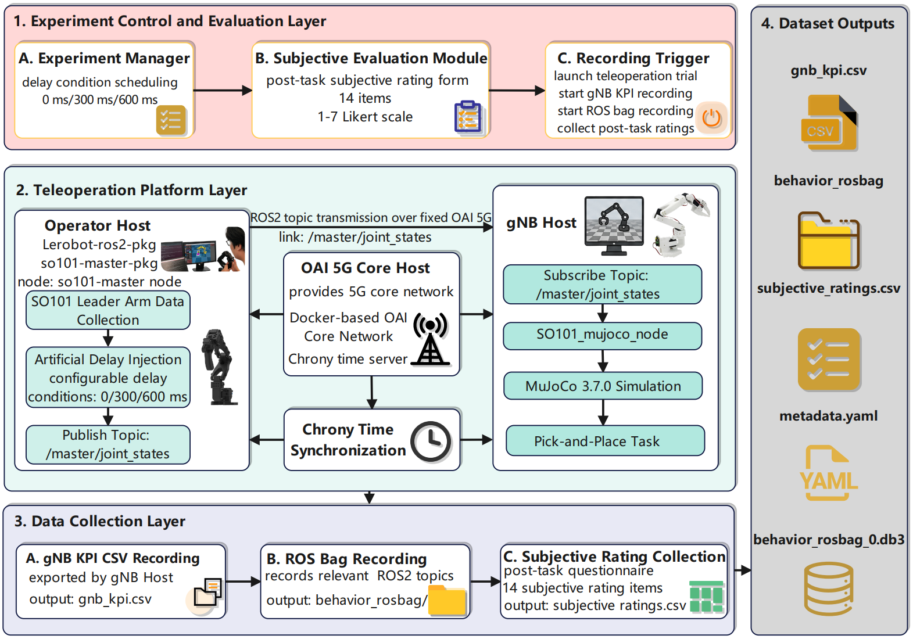

System Architecture

An anonymous project page for human-centered networked robotic teleoperation.
Networked robotic teleoperation is a cross-layer CPS problem, yet reusable artifacts often separate wireless context, middleware behavior, robot execution traces, and operator-facing outcomes. We present TeleHum, an open-source 5G network-instrumented robotic teleoperation platform and run-level dataset that combines an SO101 leader arm, ROS 2, an OpenAirInterface-based 5G testbed, MuJoCo follower simulation, gNB-side KPI logging, ROS bag recording, metadata, and post-task ratings. The dataset contains 72 runs from 24 users under 0 ms, 300 ms, and 600 ms application-side injected-delay conditions, with 9.7 million KPI rows across 52 columns, 615,236 ROS bag messages, and 1,008 item-level subjective ratings. We demonstrate a compact dataset workflow that checks completeness, aligns gNB and ROS 2 records, summarizes representative gNB KPI fields, extracts active-motion behavior metrics, and links behavior with ratings. The delays are injected into the operator command stream and are not measured 5G round-trip times. We release the complete platform implementation and dataset, including code, hardware deployment instructions, and data-processing workflows, at https://telehum.github.io.
Use the tabs or arrows to browse the project narrative. The carousel advances automatically every 10 seconds.
A short demonstration of the TeleHum platform workflow and run-level data collection process.
This anonymous project page does not currently include an arXiv link. This placeholder is reserved for a future public version.
@misc{telehum2026anonymous,
title = {TeleHum: An Open-Source Platform and Dataset for Human-Centered Networked Robotic Teleoperation},
author = {Anonymous Authors},
year = {2026},
note = {Anonymous project page}
}